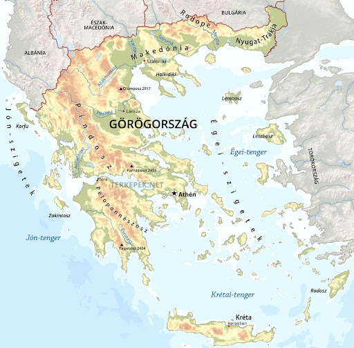
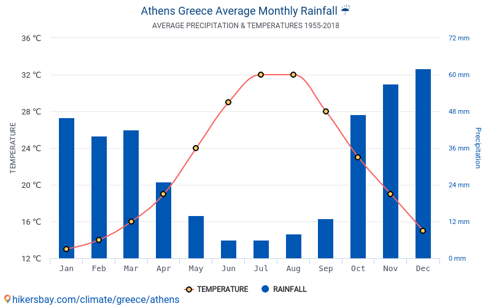
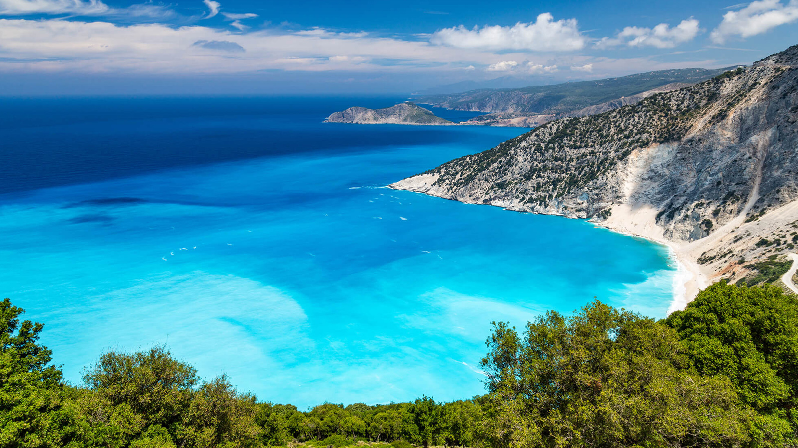
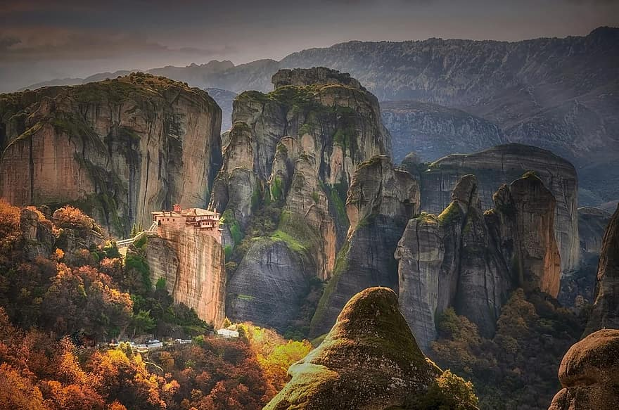

Európa délkeleti részén fekszik, a Balkán felől. Tagolt tengerpart jellemzi. Déli részén 2500 méteres hegyek vannak, északi gerincei pedig 2000 méter körüli magasságban húzodnak. Nyugati oldalán bőséges a csapadék, ezért a magasabb részeim örökzöld tölgyerdők találhatóak.
Az ország nagy része mediterrán éghajlatú. Vannak azonban mikroklimatizálások egyes régiókban a sajátos földrajzuk miatt. A Pindus-hegység körüli régiók hűvös, hideg télekkel, hóval rendelkeznek, mivel a hegyek közel állnak a hegyekhez. Az ország északi részén kontinentális éghajlat tapasztalható, ahol az északkeleti régiók átmeneti mediterrán-kontinentális éghajlaton mennek keresztül. Az ország legmagasabb hőmérsékletét a Tatoi és az Elefsina esetében rögzítették, míg a rekord legalacsonyabb hőmérsékleteket Ptolemaida-ban regisztrálták.
Görögország számos szigete az ország teljes szárazföldi területének 20% -át teszi ki. Görögországot több ezer sziget alkotja, amelyek becslések szerint körülbelül 6000-re becsülik(azonban gyakran konzervatívabb szám: 1 425). Ezek a szigetek a Jón-tengeren, a Földközi-tengeren és az Égei-tengeren találhatók. A szigeteket általában klaszterekbe csoportosítják, és a klaszterek; az Égei-tenger északi szigetei (a török nyugati part közelében) és a Kükládok (az Égei-tenger középső részén). Más klaszterek a Dodekanész (a Törökország és Kréta között), az Argo-Saronic-szigetek (a Saronic-öbölben található), a Jón-tenger szigetei (a Jón-tengeren) és a Sporádok (az Euboea-part közelében).
Egy másik földrajzi vonás, amelyet Görögország híres, a hegység. Az ország szárazföldi területének mintegy 80% -a hegyvidéki. Görögország számos hegységnek ad otthont, és ezek alkotják az ország hatalmas hegységeit. Az Olympus-hegy Görögország legmagasabb hegye, Mytikas legmagasabb csúcsa 9, 570 méter tengerszint feletti magasságban emelkedik. A hegy az Olympus tartományban található. Az Olympus-hegy 7 726 méter magas, Európa egyik legmagasabb pontja. Az Olympus-hegy 93 mérföldes kerülete, és 230 négyzetméternyi területet foglal magában. A Pindus Range az ország legnagyobb hegyvidéke, és Görögország északi részén található. A Pindus Range körülbelül 112 mérföldre terjed ki, és az átlagos szélessége 35 mérföld. A Pindus legmagasabb csúcsa a Smolikas-hegy, amely 8, 652 méter magas, és az ország második legmagasabb hegye. Az Ida-hegy Kréta szigetén a legmagasabb hegy. A hegy legmagasabb csúcsa, Timios Stavros magassága és kiemelkedése 8, 057 láb, ami Görögország egyik legmagasabb pontja.
